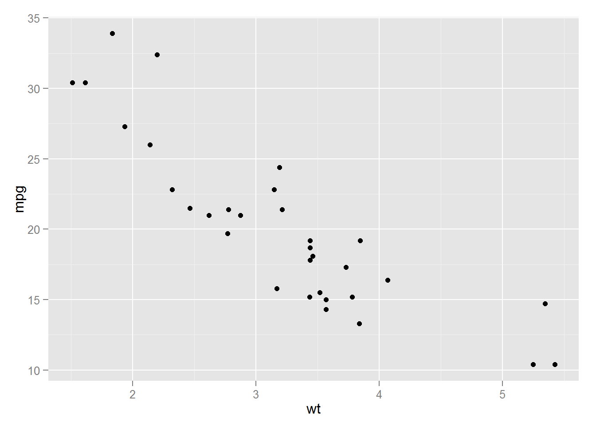
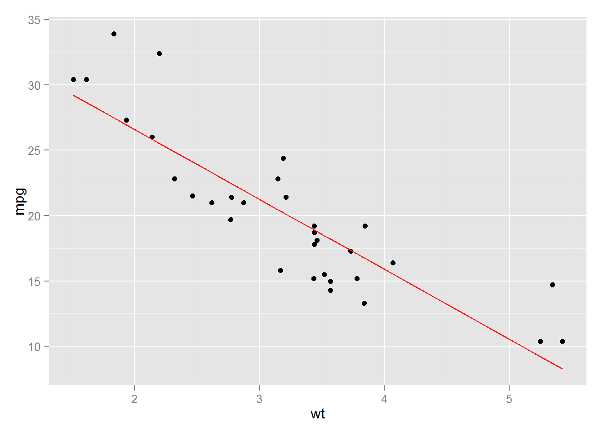

The workflow of reproducible research implies that we use programming code to carry out certain tasks in a scientific research project:
1. Load and inspect data
2. Draw statistical graphicss
3. Fit statistical models
4. Compare observed and modeled data
5. Produce report that describes all this
ds <- mtcars
head(ds, 10)## mpg cyl disp hp drat wt qsec vs am gear carb
## Mazda RX4 21.0 6 160.0 110 3.90 2.620 16.46 0 1 4 4
## Mazda RX4 Wag 21.0 6 160.0 110 3.90 2.875 17.02 0 1 4 4
## Datsun 710 22.8 4 108.0 93 3.85 2.320 18.61 1 1 4 1
## Hornet 4 Drive 21.4 6 258.0 110 3.08 3.215 19.44 1 0 3 1
## Hornet Sportabout 18.7 8 360.0 175 3.15 3.440 17.02 0 0 3 2
## Valiant 18.1 6 225.0 105 2.76 3.460 20.22 1 0 3 1
## Duster 360 14.3 8 360.0 245 3.21 3.570 15.84 0 0 3 4
## Merc 240D 24.4 4 146.7 62 3.69 3.190 20.00 1 0 4 2
## Merc 230 22.8 4 140.8 95 3.92 3.150 22.90 1 0 4 2
## Merc 280 19.2 6 167.6 123 3.92 3.440 18.30 1 0 4 4require(ggplot2)
ggplot(mtcars, aes(x=wt, y=mpg)) + geom_point()
lm(mpg ~ wt, mtcars)##
## Call:
## lm(formula = mpg ~ wt, data = mtcars)
##
## Coefficients:
## (Intercept) wt
## 37.29 -5.34require(ggplot2)
ds <- mtcars
ds$mpg_modeled <- predict(lm(mpg ~ wt, mtcars))
p <- ggplot(ds, aes(x=wt, y=mpg))
p <- p + geom_point()
p <- p + geom_line(aes(y=mpg_modeled),color="red")
p